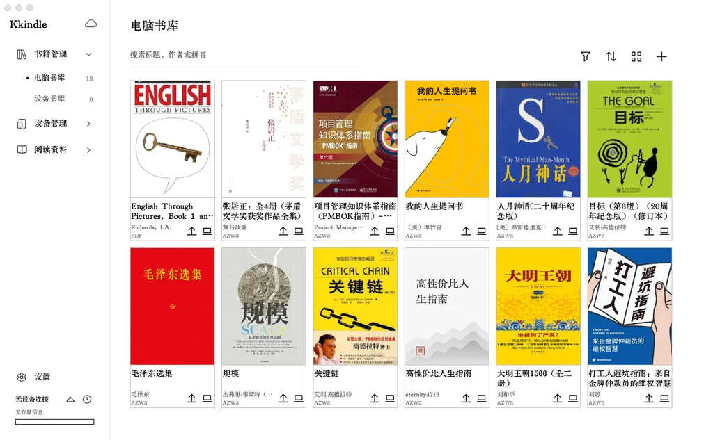
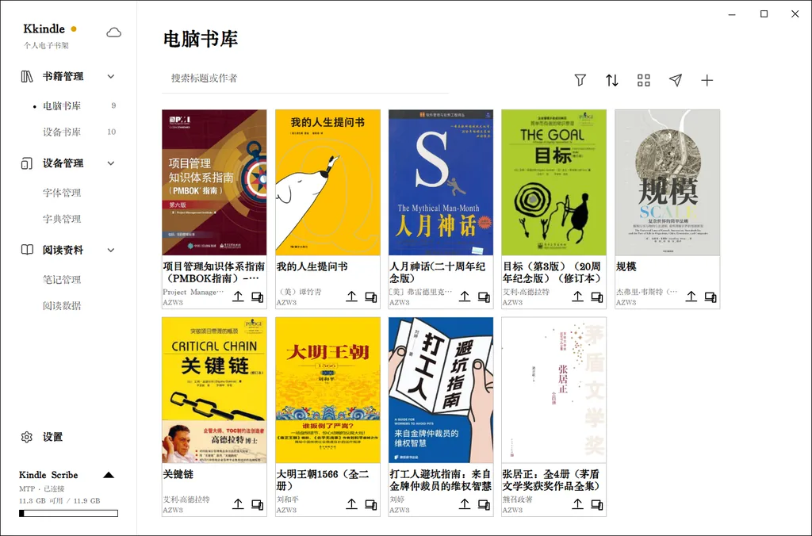
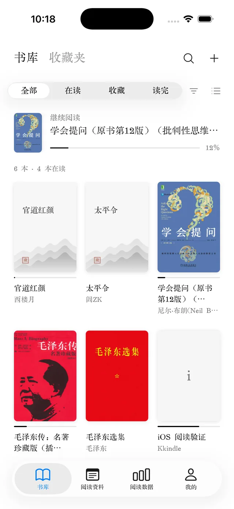
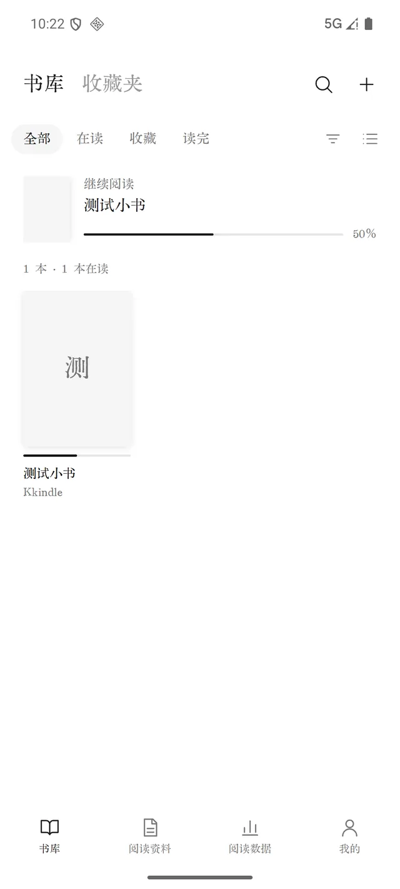
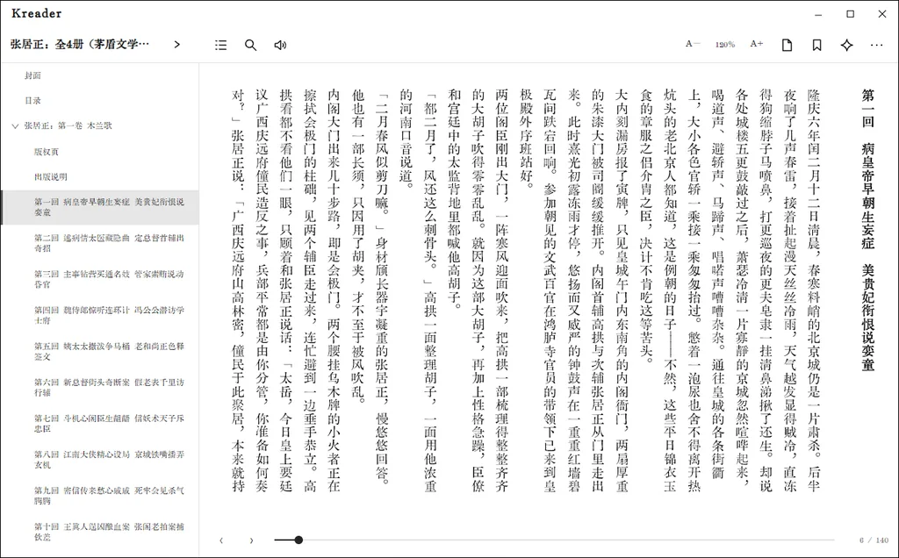
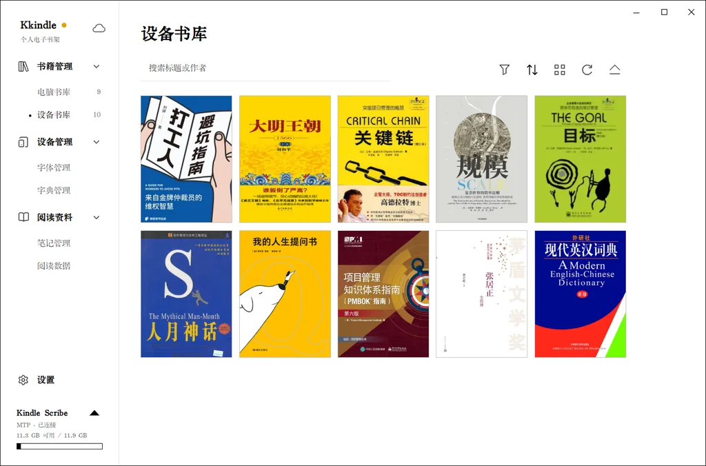
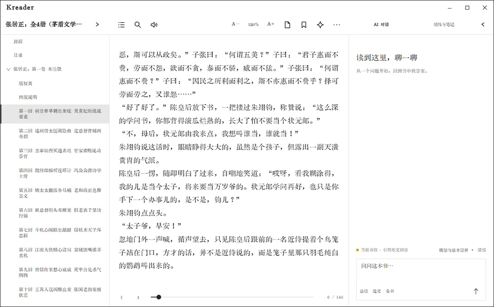

01 / LIBRARY
你的私人书库
导入 EPUB、PDF、MOBI 和 AZW3，自动识别元数据与封面，按作者、标签、格式和阅读状态找到下一本书。
01 / INTERFACE




02 / MADE FOR READING
从整理到阅读，再到带上 Kindle，把时间留给真正重要的内容。
导入 EPUB、PDF、MOBI 和 AZW3，自动识别元数据与封面，按作者、标签、格式和阅读状态找到下一本书。
支持横排、竖排、滚动、分页和双栏阅读，书签、搜索、脚注、批注与阅读进度都围绕正文展开。

连接 Kindle 后查看书籍、容量、字体和词典，批量发送、导出书籍并安全退出设备。

用 AI 解释选文、总结章节或讨论全书；用批注、词典、阅读数据和导出记录，把阅读留下来。

v1.1.3
最新